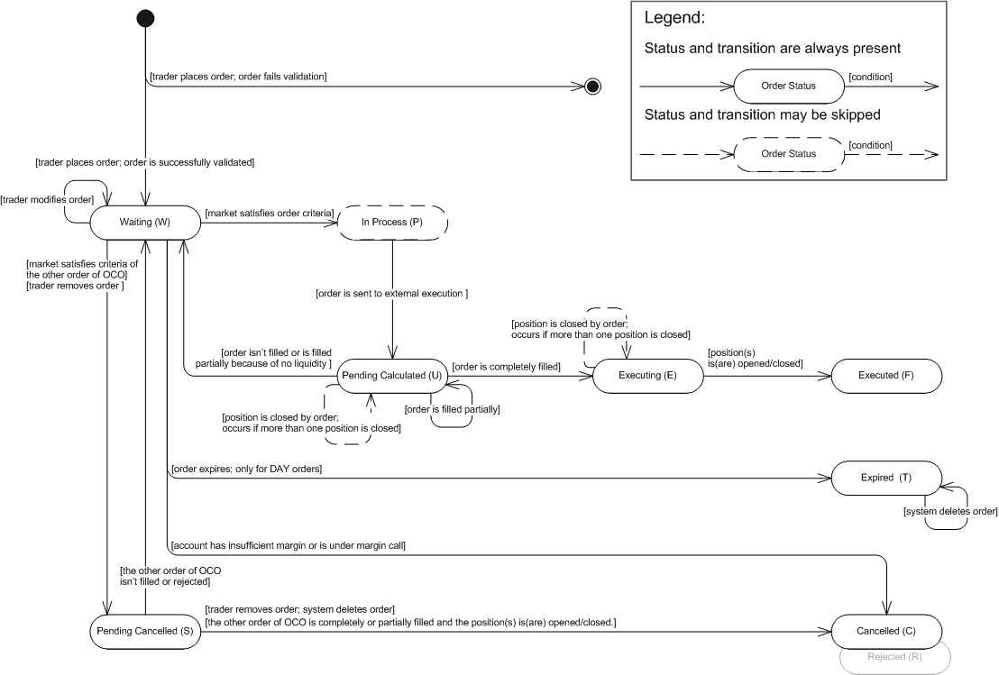

The article describes the OCO (One-Cancels-the-Other) contingent order.
An OCO (One-Cancels-the-Other) Contingent Order is a contingent order consisting of two (or more) orders. When one of the orders is executed completely or partially, the other orders are automatically cancelled. The OCO contingent order may be used by a trader with limited funds, i.e. allow entering the market at one among many instruments picking the most profitable one. Another way when OCO may be used is a breakout strategy if the trader is unsure of which direction the breakout may occur. The order to buy is placed above resistance level if the market price breaks to the top and the order to sell is placed below the support level if the market price breaks to the down.
The Entry Stop or/and Entry Limit orders can be embedded into the OCO contingent order. When the OCO contingent order is placed, all embedded orders become active in the market. The orders can be placed from the same account but for different instruments. The trade operation and amount of embedded order do not depend on trade operation and amount of other embedded orders. Each order may be a primary order of the ELS (Entry-with-Limit-and-Stop) Contingent Order.
The time-in-force options and execution details for an order are the same as those for Entry Limit and Entry Stop orders.
As mentioned above, when one of the orders is executed completely or partially, the other orders are automatically cancelled. Once the market satisfies criteria set in one of the orders, the other orders become inactive and are about to be rejected. They finally get rejected when the order is completely or partially filled. If the first order cannot be filled/is filled partially due to the lack of liquidity (for more information see execution details of stop and limit orders), the orders become active again. See execution Scenario 1, Scenario 2.
The state machine of the order which is embedded into OCO contingent order is based on the FXCM order statuses. The state machine, description of order statuses, and their transitions are provided below. Note that the order is created by the system only after successful order validation. If the order does not pass validation, the system creates a rejection message and does not store the order in the database. However, the information about the order (such as, for example, the order ID and the reason for its rejection) is stored in the database. So, the initial transition on the diagram indicates that the order is successfully validated.
OCO Embedded Order: State Machine

Order Embedded Into OCO: FXCM Order Statuses Description
Order Status |
Order Status Description |
Transition |
||||||||||
Waiting (W) |
The status has one of the following meanings:
|
|
||||||||||
In Process (P) |
The market price satisfied the criteria set in the order; the order is ready for further execution. |
|
||||||||||
Pending Calculated (U) |
The status has one of the following meanings:
|
|
||||||||||
Executing (E) |
The order was completely filled. |
|
||||||||||
Executed (F) |
A position was opened/closed. Note that the order may result in a number of open/closed positions. |
|||||||||||
Expired (T) |
The status is applicable only to DAY orders: |
|
||||||||||
Cancelled (C) |
The status has one of the following meanings:
|
|||||||||||
Pending Cancelled (S) |
The status has one of the following meanings:
|
|